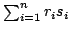
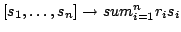

Usage
dot []
dot([])
Signature
dot: Vector R Vector %
| Parameter | Type | Description |
|---|---|---|
| R | coefficients | |
| % | sequences |
Returns
dot(r)(s) returns the sequence , while dot(r) returns the map .
Remarks
Using dot is more efficient than building up the same linear combination via additions and multiplications, since the intermediate combinations are not storing their computed elements when using dot.